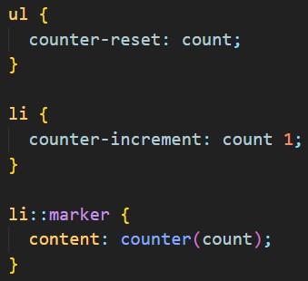

атрибут title="подсказка при hover"
git init
git remote add origin http://
git pull origin main
git add .
git status
git commit -m "commit"
git push origin main или git push http://
git clone http://
export / import
import дефолтные через запятую, { именованные через запятую } откуда
"./... .js"
Основной файл
import del, { sum, show, color } from "./func.js";
color(elem);
sum(4, 1);
show(elem);
del(elem);
переименование
import del as delete, { * as name } from "./func.js";
import del теперь delete, { все теперь name } из "./func.js";
функции стали как свойства объекта name
но не все а только те которые мы
объединили в объект * as name
name.color(elem);
name.sum(4, 1);
name.show(elem);
delete(elem); //не свойсво объекта name
Дополнительный файл
let sum = function (a, b) { ... }
let show = function (elem) { ... }
export let color = function() { ... }
export default function del(elem) { ... }
объявленный экспорт снизу не перечисляется:
export { sum, show };
Убираем выделение текста при нажатии
form {
user-select: none;
-webkit-user-select: none;
}
constructor
Свойство constructor ссылается на функцию-конструктор,
которая была использована при создании объекта:
<script>
let x = new String();
if (x.constructor == String)
document.write("Это объект String");
else
document.write("Это не String");
// выведет: Это объект String
</script>
css счетчик

text-decoration - text-decoration-line, text-decoration-style, text-decoration-color;